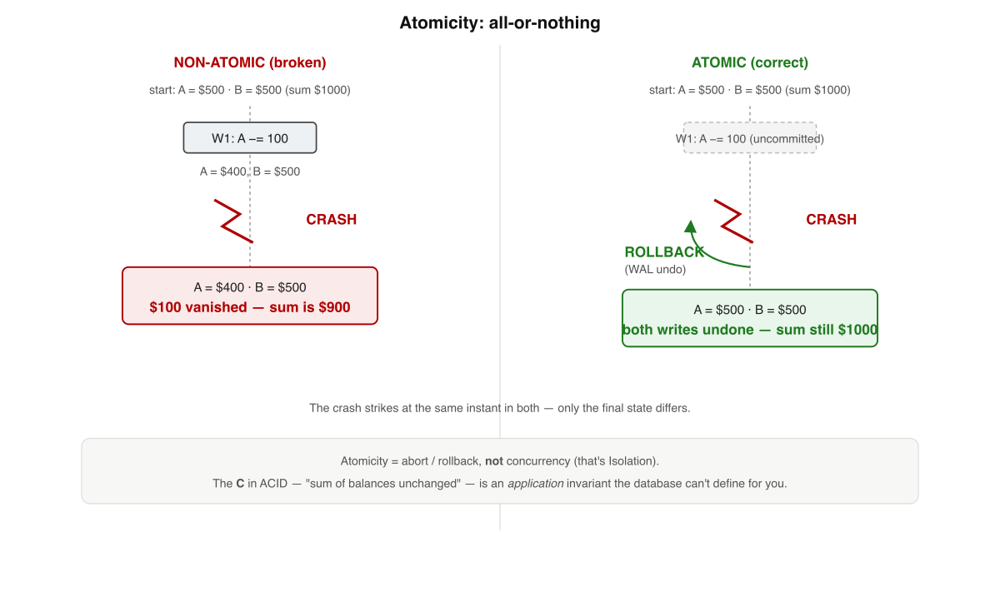
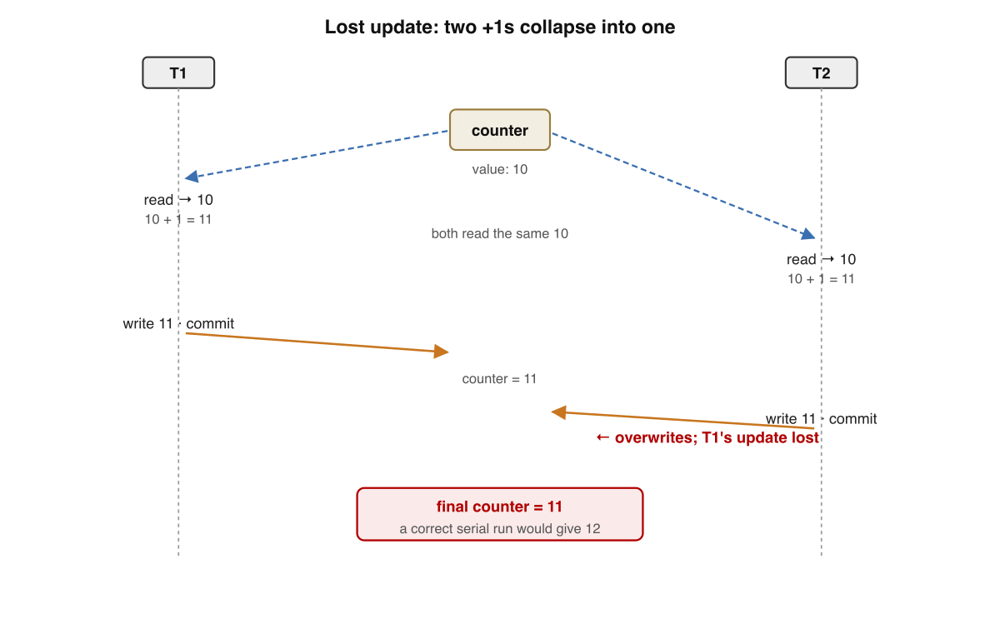
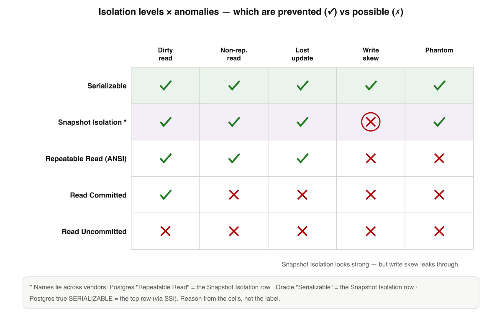
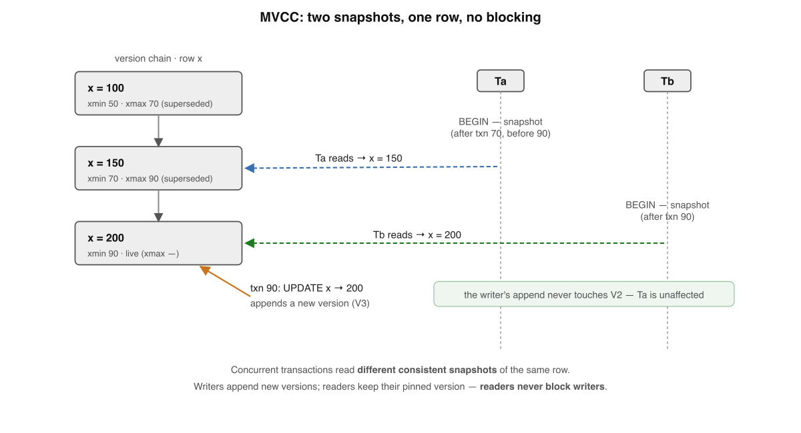
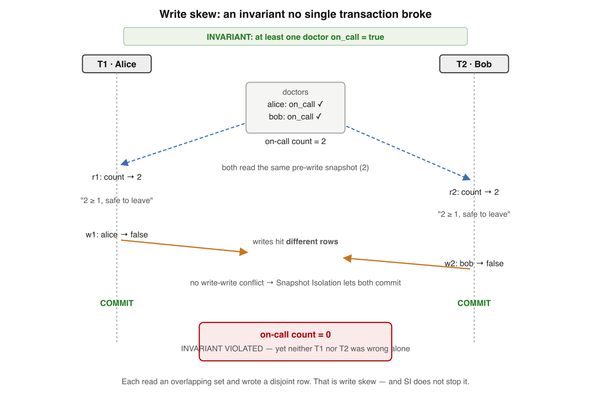
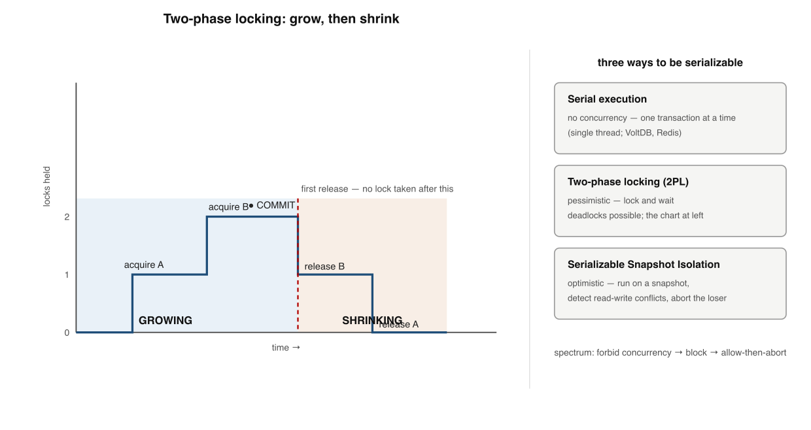
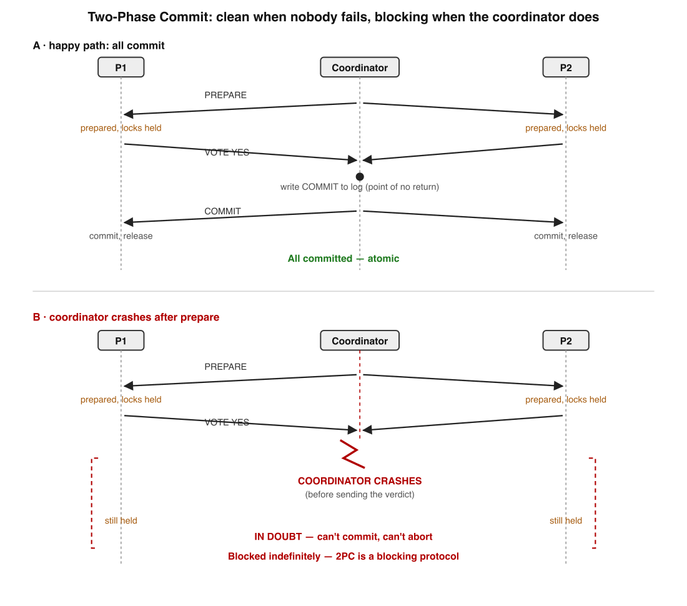
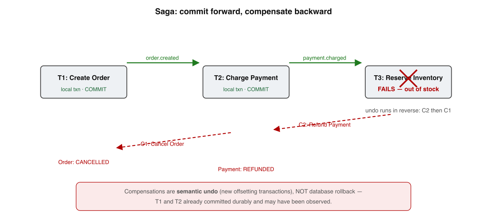
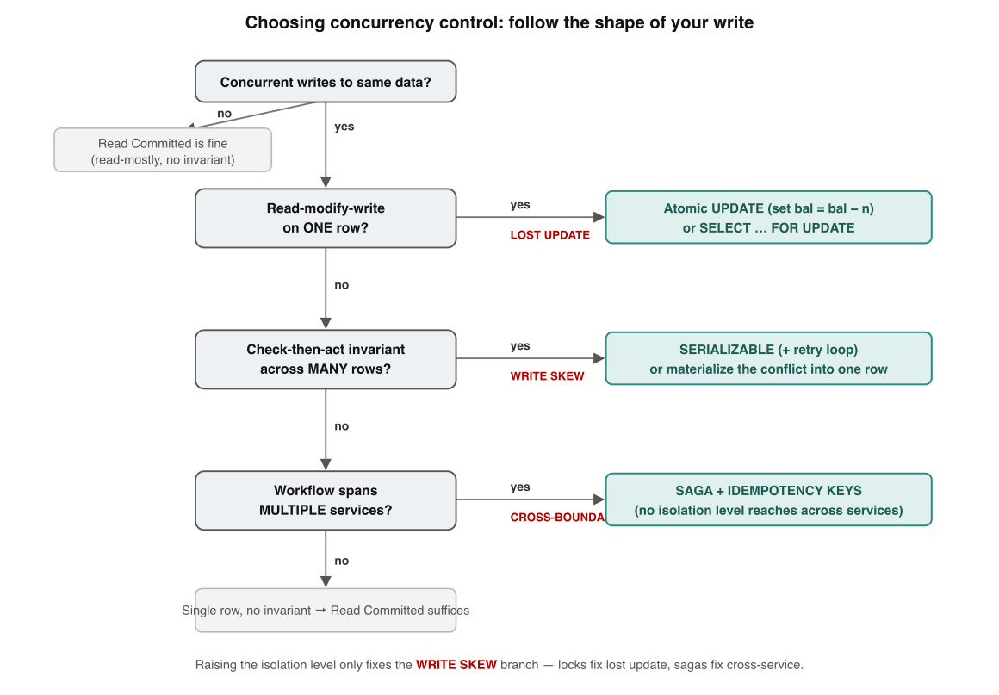

Your bar: redraw the isolation × anomaly matrix on a whiteboard from memory, and
in a code review name which anomaly a write is exposed to and the exact fix. Every level is built to
be seen and redrawn, not read. Grounded in Kleppmann's DDIA ch.7&91
and Berenson et al. (1995).2
One sentence holds the whole book. Each level unpacks one chip of it:
A transaction is an all-or-nothing unitisolation fakes "ran one at a time"weak levels leak named anomaliesyou pick the fix per write
Memorise this ladder. Levels 3–6 climb it; Levels 1–2 explain the rungs; Levels 7–9 leave the single node and reach across services.
1
ACID — the four promises (and what they don't mean)
A transaction is one all-or-nothing unit. ACID names four guarantees around it — only one is about concurrency.
"Atomic" means abortable — nothing to do with concurrency. Consistency is the odd letter out: it's your code's job, the DB only helps.1

All-or-nothing in transaction-history notation: a crash after the debit but before the credit rolls back both — money is conserved.
Atomicity A partly-done transaction is discarded (rollback / abort). It is about undoability — not "no one sees my intermediate state".
Consistency Your app invariants hold if your code is correct. The DB enforces FKs/uniqueness/CHECK; the meaning lives in your code.
Isolation Concurrent transactions behave as some serial order. The default level is almost always weaker than that.
Durability Committed data survives the faults you planned for (WAL + fsync, then replication). Never absolute — Jepsen proves it.
✗ "ACID-compliant = safe / serializable"
✓ ACID is silent on which isolation level you get by default — and it's weaker than serializable
🧱 Memory rule: A=abortable · C=your job · I=concurrency (the only multi-txn letter) · D=survives planned faults. WAL gives A and D together.
Memory check
Which letter is about concurrency? → Isolation, and only Isolation
Whose job is Consistency? → the application's; the DB only helps preserve it
What single mechanism gives both atomicity and durability? → the write-ahead log (undo + redo)
2
The anomalies — the catalog of concurrency bugs
An anomaly = an outcome no serial order could produce. Isolation levels are defined by which ones they forbid.
Berenson et al. (1995) number these P0–P4.2 Adya (1999) later recast them as forbidden cycles in a transaction dependency graph — the modern lens.

The canonical lost update: both read 10, both write 11. Result 11, not 12 — one increment vanishes. Look closely; this is the one you'll ship by accident.
✗ "If two txns write the same table at once, that's an anomaly"
✓ An anomaly is a result no serial order could have produced — that clause is the entire game
🐛 Memory rule: Dirty read = saw uncommitted · Non-repeatable = row changed under me · Phantom = search result changed · Lost update = same-row clobber · Write skew = disjoint writes break one invariant.
Memory check
What is the one-line definition of an anomaly? → a result no serial order could produce
Which anomaly does every real engine forbid? → dirty write (P0)
Lost update vs write skew? → same row clobbered vs disjoint writes break an invariant
3
Isolation levels — the menu, and why the names lie
A level is a contract: which anomalies will the DB prevent for me? Read the matrix, never the name.

The level × anomaly matrix. Read it bottom-up: every step adds protection. Snapshot Isolation is the awkward guest — blocks phantoms, still leaks write skew, so it sits below true Serializable.
Level
Dirty read
Non-repeat.
Phantom
Write skew
Read Uncommitted
possible
possible
possible
possible
Read Committed
prevented
possible
possible
possible
Snapshot (SI)
prevented
prevented
prevented*
possible
Serializable
prevented
prevented
prevented
prevented
ANSI SQL-92 names only three phenomena (dirty/non-repeatable/phantom). Lost update and write skew aren't in the standard at all — which is why SI doesn't fit any ANSI row cleanly.
Postgres "Repeatable Read" is actually Snapshot Isolation — stronger than ANSI RR (blocks phantoms) but still leaks write skew.
Oracle "Serializable" is actually Snapshot Isolation — so it allows write skew. Not serializable in the textbook sense.
MySQL InnoDB "Repeatable Read" is the default; blocks many phantoms via next-key (gap) locks — a different mechanism, different profile.
A level is a ceiling, not a floor Nothing stops an engine preventing more than the level requires. Always check the engine, not the word.
✗ "Two DBs both set to 'Repeatable Read' give the same guarantees"
✓ Same name, different real guarantees — a bug impossible on one is live on the other
📖 Memory rule: The standard defines levels by anomalies prevented; vendors slap those names on whatever their engine does. Reason from the matrix, never the name.
Memory check
How does ANSI define a level? → by the phenomena it forbids, not the implementation
What does Postgres "Repeatable Read" really give you? → Snapshot Isolation (write skew still possible)
Why is SI the "awkward guest"? → blocks phantoms but leaks write skew, which ANSI can't even express
4
Snapshot Isolation & MVCC — how Read Committed / SI actually work
Real engines don't lock readers. They keep multiple versions of each row and let every reader see a frozen, consistent past.

MVCC: every write appends a new version tagged with its txn id; readers walk the chain to the newest version committed before their snapshot. That's why readers never block writers.The single mechanical difference: snapshot scope. Per-statement (RC) lets the view move under you; per-transaction (SI) freezes it.
Read Committed No dirty reads, no dirty writes; a fresh snapshot per statement; write locks held to commit. The default in Postgres, Oracle, SQL Server.
Snapshot Isolation One snapshot per transaction; reads never block. Write conflicts resolved at commit by first-committer-wins; the loser aborts.
MVCC rules Every UPDATE writes a new tuple (Postgres tags xmin/xmax); versions form a chain; visibility = was it committed before my snapshot?
The cost is garbage Dead versions must be reclaimed (VACUUM / GC). A long-running txn pins old versions open → table bloat. The #1 MVCC incident.
✗ "A long read-only transaction is harmless"
✓ Its open snapshot pins old versions, stalls VACUUM, and bloats tables by gigabytes
📸 Memory rule: MVCC = append a version per write, read the newest one committed before your snapshot. RC snapshots per statement; SI per transaction; neither blocks reads.
Memory check
RC vs SI in one word? → snapshot scope: per-statement vs per-transaction
What does an MVCC UPDATE physically do? → writes a new version tagged with the writer's txn id
Why is a long read txn an operational risk? → pins old versions, blocks VACUUM → bloat
5
Lost updates & write skew — the subtle invariant-breakers
These survive a green test suite and a casual BEGIN/COMMIT, then corrupt prod under load. The fixes are structural, not "be careful".

Write skew: two on-call doctors each read "count = 2, safe to leave", each write their own row. No lock conflict — different rows. Final state: zero on call. Each txn alone did nothing wrong.
Lost update — three fixes, in this order
Fix
What it is
Reach for it when
1 · Atomic write
UPDATE c SET n = n + 1 — computed in-engine under its own lock
new value is a pure fn of the old; cheapest & safest
2 · Explicit lock
SELECT … FOR UPDATE — pessimistic row lock to commit
you must read→compute→write in app code
3 · Compare-and-set
… WHERE version = :v; retry if 0 rows — optimistic
scale; no lock across user think-time
Lost update Two read-modify-writes to the same object; one silently overwrites the other. Counters, balances, JSON merges.
Write skew Two reads of overlapping rows, each passes a check, each writes a different row → joint invariant broken. SI does NOT prevent it.
Why SI misses it Both read pre-write snapshots; write sets are disjoint, so first-committer-wins has nothing to conflict on.
Materialize the conflict Add a lock row per shift/room/seat; force FOR UPDATE on it so disjoint writers collide. Ugly — use only without SSI.
✗ "Snapshot isolation will protect my on-call invariant"
✓ Write skew slips through SI; use Serializable (SSI) or a materialized lock row
⚖️ Memory rule: Lock the row you can name (atomic write / FOR UPDATE / CAS for lost update); serialize the conflict you can't name (SSI / materialized row for write skew).
Memory check
Structural difference, lost update vs write skew? → same row clobbered vs disjoint writes break an invariant
Cheapest counter fix? → atomic in-DB SET n = n + 1
Why doesn't SI stop write skew? → disjoint writes; nothing to conflict on at commit
6
Serializability — serial · 2PL · SSI
Instead of plugging anomalies one by one, demand that none can ever happen. Three ways to deliver it, three currencies to pay in.

2PL's lock count rises (growing phase, acquire only) then falls (shrinking phase, release only). The first release ends growth — no new lock after it. That discipline is what produces serializability.
Strategy
Style
You pay in
Wins when
Serial execution
no concurrency (1 thread)
throughput ceiling
data fits RAM; txns tiny, single-partition (VoltDB, Redis)
2PL
pessimistic locking
lock waits, deadlocks, bad tail latency
contention high & aborts intolerable
SSI
optimistic, abort on conflict
aborts + retries under contention
contention low–moderate; reads must not block
"Serializable" formally The result equals some serial order — not a specific one, not wall-clock order. Constrains the outcome, not the physical execution.
2PL adds predicate locks Row locks can't lock a row that doesn't exist yet — so index-range / predicate locks stop phantom inserts. (Eswaran et al. 1976.)
SSI Start from SI (no read locks), track read-write dependencies, abort one txn at commit if a dangerous structure forms. Postgres ships it as SERIALIZABLE. (Cahill et al. 2008.)3
2PL ≠ 2PC Two-phase locking = concurrency control on one node. Two-phase commit = atomic commit across nodes (Level 7). Same number, unrelated.
✗ "Serializable means transactions can't overlap in time"
✓ They still overlap physically — only the result must match some serial order
🔒 Memory rule: Serial = forbid concurrency · 2PL = block (pessimistic, deadlocks) · SSI = let it run, abort losers (optimistic, retries). Read your workload to choose.
Memory check
What does serializable constrain? → the result equals some serial order, not execution
What ends 2PL's growing phase? → the first lock release; no new lock after it
How does SSI differ from 2PL on a conflict? → optimistic abort at commit vs pessimistic block
Now the data is on two machines. Atomicity is no longer one log write. You need a tiny consensus protocol — and it inherits consensus's worst property.

2PC: prepare/vote, then commit/abort, driven by a coordinator. The coordinator's COMMIT log write is the single irrevocable moment. If it crashes after participants vote YES, they're stuck in doubt holding locks.This is the Two Generals Problem with a tie-breaker: one node decides, the rest obey — but if that node dies mid-decision, the rest freeze.
Phase 1 — prepare/vote Coordinator sends PREPARE; each participant does everything short of commit, writes a prepared record, replies YES → and surrenders its right to abort.
Phase 2 — commit/abort All YES → coordinator writes COMMIT (the point of no return) → tells everyone. Any NO/timeout → ABORT.
The fatal flaw: it blocks Coordinator crash after the vote leaves prepared participants in doubt, holding locks, with no safe unilateral move. A single point of failure that freezes data.
3PC doesn't save you Non-blocking only under a synchronous network — which doesn't exist. You can't tell a crashed coordinator from a slow one. Essentially never used.
✗ "Add a third phase (3PC) and it's non-blocking and safe"
✓ 3PC trades blocking for inconsistency under partition — worse on a real async network
⛓️ Memory rule: 2PC = vote then act, via a coordinator. The COMMIT log write is the point of no return. Coordinator crash post-vote = in-doubt participants block on their locks.
Memory check
When is a 2PC outcome irrevocably fixed? → when the coordinator writes its COMMIT record
A participant voted YES, coordinator dies — what does it do? → block, hold locks, wait for recovery
Why is 3PC not the fix? → it needs a synchronous network; real networks are async
8
Sagas, outbox & idempotency — eventual consistency for workflows
Checkout spans orders, payments, inventory — three DBs, three teams. No single BEGIN/COMMIT wraps them. So you trade isolation for availability.

A saga = local transactions T₁…Tₙ, each with a compensating Cᵢ. Fail at step j → run Cⱼ…C₁ backward. A compensation is not a rollback: T₂ already committed, so you issue a new offsetting transaction (refund, not delete).
Choose 2PC when
Choose a saga when
All participants share an XA stack
Independent services / vendors
Steps are short; locks held briefly
The operation is long-running
You need true isolation between ops
You can tolerate visible intermediate states
Operations have no natural undo
Each step has a clean semantic undo
Saga Each Tᵢ is a real short local ACID txn; no locks across steps. Not serializable — others can see a charged-but-unfulfilled order. (Garcia-Molina & Salem 1987.)4
Transactional outbox In the same local txn that updates business tables, INSERT the event into an outbox row. One commit, fully atomic. A relay publishes later.
Idempotency key The relay gives at-least-once → duplicates are inevitable. Stamp each step {sagaId}:{step}; dedup on the consumer so retries don't double-charge.
The three are a set Outbox (never lost) + idempotency (never double-applied) + compensations (forward or clean unwind). Drop one and you have a correctness hole.
✗ "A compensating transaction is just a delayed rollback"
✓ The committed row is real; you can't un-send the email — you send an apology (a new offsetting txn)
🔄 Memory rule: Sagas swap global locks for eventual consistency: local txn + compensation + outbox (at-least-once) + idempotency key (dedup). Model a PENDING state; tolerate the window.
Memory check
Compensation vs rollback? → offsets a committed change vs erases an uncommitted one
Why does the outbox exist? → commit state change + event atomically in one local txn
What does at-least-once force every step to have? → an idempotency key
9
Choosing isolation in practice — the senior decision tree
The Monday-morning payoff: isolation is set per transaction, so you choose by the shape of the write, not one global setting.

Picking concurrency control is a decision tree. Follow the shape of your write to the specific fix — raising the isolation level only solves one of the branches.Three shapes, three fixes. The senior instinct in one line: lock the row you can name, serialize the conflict you can't, make idempotent everything that crosses a wire.
Engine
Default
What you actually get
PostgreSQL
Read Committed
fresh snapshot/statement; lost update + write skew both possible
MySQL (InnoDB)
Repeatable Read
snapshot at first read; next-key locks block some phantoms
Oracle
Read Committed
snapshot/statement; "Serializable" is actually SI
SQL Server
Read Committed
lock-based; opt-in SNAPSHOT for MVCC
✗ "My database is ACID, so concurrency is handled"
✓ Every default is weaker than serializable; whatever the level doesn't prevent, you must
🧭 Senior checklist: ① name the invariant · ② does the read feed a write? · ③ does it span >1 row? · ④ what's the real default here? · ⑤ if Serializable, is there a retry loop for 40001?
Memory check
Read-modify-write in app code — the risk & fix? → lost update; atomic UPDATE or FOR UPDATE
Cross-row invariant — which fix actually works? → Serializable or a materialized lock row
Postgres default, really? → Read Committed; write skew + lost update are your job
Q1. Which ACID property is the only one about more than one transaction at a time?
Q2. Two clerks both read seats=10, both write 9; two seats sold but the count dropped by one. This is…
Q3. Postgres "Repeatable Read" actually provides…
Q4. Why does snapshot isolation fail to prevent the on-call-doctors anomaly?
Q5. A 2PC participant voted YES, then the coordinator crashed. It must…
Q6. How does a compensating transaction differ from a database rollback?
Reconstruct the ladder from a blank page
Write the four levels and, for each, the anomalies it still leaks — nothing on screen. Then reveal and compare; gaps are your next drill.
RU dirty read, non-repeatable, phantom, write skew · RC no dirty reads; still non-repeatable + phantom + lost update + write skew ·
SI (vendors' "RR") consistent snapshot; blocks dirty/non-repeatable/phantom; still leaks write skew ·
Serializable nothing (serial / 2PL / SSI). Fixes: lost update → atomic/FOR UPDATE/CAS · write skew → SSI or materialized row · cross-service → saga + idempotency.
I'm your teacher — ask me anything. Say "grill me on isolation" for mixed no-clue questions, or paste a real read-modify-write and I'll name the anomaly and the cheapest fix with you. Want a worked write-skew trace, or the next book on storage engines? Just ask.
Interview — pick your bar
Answer out loud in ~60s, then reveal. Core = recall · Senior = trade-offs & failure modes · Staff = synthesis under ambiguity · System Design = open design round (a different axis, not a harder level).
What does ACID actually promise — and what does "atomic" not mean?
Hit these points: A = abortable — undo a partial txn on failure, not anything about concurrency → C = your application invariant, mostly your code's job, the database only enforces what you declare → I = concurrent txns behave as if run in some serial order → D = committed data survives planned faults (crash, power loss) → bonus: A and D ride the same WAL, and "ACID-compliant" says nothing about the default isolation level you actually run at.
Name the standard isolation levels from weakest to strongest, and what each adds.
Hit these points:Read Uncommitted — may see another txn's uncommitted writes (dirty reads); almost no engine actually offers true dirty reads as a default → Read Committed — only committed data, but a fresh read each statement, so values can change mid-txn → Repeatable Read — a stable per-txn view; in practice this is snapshot isolation in Postgres → Serializable — the result equals some serial order; forbids all anomalies → the ladder is "which anomalies are still allowed," and the name on the tin lies — reason from the matrix, not the label.
List the read/write anomalies and give a one-line definition of each.
Hit these points:dirty read — read data another txn hasn't committed → non-repeatable read (read skew) — same row read twice in one txn returns two values → phantom — a range/predicate query returns a different set because rows were inserted/deleted → lost update — two read-modify-write cycles on the same row, one overwrites the other → write skew — two txns read an overlapping condition and each write a different row, breaking an invariant → an anomaly is any result no serial order could produce.
Explain how an MVCC engine serves a consistent read without taking locks.
Hit these points: every write appends a new versioned tuple tagged with its creating txn id rather than overwriting in place → a reader carries a snapshot and walks the version chain, returning the newest version committed before its snapshot → therefore readers never block writers and writers never block readers → the cost is dead versions that need VACUUM/GC, and a long-running txn pins the cleanup horizon open → bloat → "consistent read = read your snapshot, ignore everything newer."
Two services both set "Repeatable Read." Do they give the same guarantees?
Hit these points: no — the name is not the guarantee → Postgres RR is snapshot isolation: it leaks write skew and has no gap locks → MySQL InnoDB RR is snapshot-ish but adds next-key (gap) locks that block many phantoms RR doesn't require → Oracle's "Serializable" is actually SI and still admits write skew → the senior move: reason from the level×anomaly matrix for your engine and version, never from the ANSI label, and verify with a concurrency test before you rely on it.
A counter is losing increments under load. Walk me through diagnosis and the fix ladder.
Hit these points: classic lost update — read-modify-write in app code where both txns read the same stale value and write back, so one increment vanishes → confirm by checking whether the write is computed in the app from a prior SELECT rather than in the database → fixes cheapest-first: atomic SET n = n + 1 in one statement → SELECT … FOR UPDATE to serialize the read-modify-write → compare-and-set with a version column plus a retry loop → note Postgres SI auto-detects lost updates and aborts a loser, but MySQL InnoDB RR does not, so the engine changes which fix you need.
Why doesn't Snapshot Isolation prevent write skew, and how do you actually fix it?
Hit these points: both txns read their pre-write snapshots and each write a different row, so first-committer-wins has no same-row conflict to catch → both commit and break an invariant (last on-call doctor, last unit of inventory, double-booked room) that no serial order would allow → fixes: raise to Serializable — Postgres SSI tracks read/write dependencies and aborts a loser at commit, so budget for retries on SQLSTATE 40001 → or materialize the conflict into a single lockable row (a guard row / summary row) and take FOR UPDATE on it → "lock the row you can name; serialize the conflict you can't."
Locking (2PL) vs MVCC for isolation — what's the real trade-off?
Hit these points: strict 2PL takes shared/exclusive locks and holds them to commit, so readers and writers block each other and you get serializability but contention and deadlocks → MVCC keeps multiple versions so reads run off a snapshot and never block writes, giving great read concurrency but only snapshot isolation by default (write skew leaks) → pure MVCC needs an extra layer (SSI, or explicit locks) to reach serializable → cost shifts from blocking (2PL) to version cleanup + abort/retry (MVCC) → most engines are MVCC for reads with locks on writes; the crossover is contention — measure where 2PL's blocking tax beats MVCC's abort tax.
"Just set everything to Serializable and stop worrying about anomalies." Argue for, then against.
For: Serializable is the only level that removes the whole anomaly class, so you stop reasoning case-by-case about write skew and phantoms; on Postgres SSI reads stay non-blocking, so the baseline cost is modest at low contention. Against: under contention SSI aborts climb (false positives included), and every serializable txn now needs a correct retry loop on 40001 — without it you've shipped a latent 500; the guarantee is single-node only, so a sharded fleet isn't serializable just because each node is; latency and abort rate become workload-dependent. Synthesis: default to the lowest level that provably forbids the anomalies your invariants need; reserve Serializable for the txns that truly require it, and only after the retry loop and observability are in place.
You inherit a service on Read Committed with occasional "impossible" data states. How do you find and classify the bug?
Hit these points: don't guess the level — reproduce and characterize the corruption first: is it a single row diverging (lost update), a cross-row invariant broken (write skew), or a count/range that shifted (phantom)? → map the symptom to the anomaly using the level×anomaly matrix for the actual engine/version, not the ANSI name → confirm with a deterministic two-session interleaving that reproduces it, so the fix is verified, not hoped → choose the narrowest fix: atomic statement or FOR UPDATE for lost update, materialized lock row or Serializable for write skew, predicate/index-range locks or Serializable for phantoms → add the missing observability — log isolation level per txn and alert on retry/abort spikes → the staff move is turning "occasional impossible state" into a named, reproduced anomaly with a regression test, not bumping the global level and hoping.
An invariant must hold across two microservices with separate databases. How do you reason about isolation here?
Hit these points: first reframe — isolation levels are a single-database tool; there is no shared serializable order across two stores → options: a distributed txn (2PC) buys real atomicity but blocks on coordinator crash and couples availability, acceptable only for short steps on a shared XA stack or inside one engine with a replicated coordinator → the usual answer is a saga: a local txn per service plus a compensating action each, ordered so the irreversible pivot is last → make it safe with a transactional outbox (publish the event atomically with the local commit) and idempotency keys for at-least-once delivery → accept that you trade ACID isolation for eventual consistency with a visible PENDING state → the staff call is naming what guarantee you actually need (atomic vs eventually-consistent) before reaching for 2PC.
Design-round framework — drive any "choose the concurrency control" prompt through these, out loud:
Clarify the invariants — which exact data rules must never break, and which anomalies would violate them.
Read/write shape & contention — read-heavy vs write-heavy, hot rows, txn duration.
Pick the floor level that forbids those anomalies — reason from the matrix, not the ANSI name.
Retry & idempotency — every Serializable path needs a 40001 retry loop; make writes idempotent.
Failure modes — lost update / write skew / phantom / deadlock / abort storm under contention.
Observability — log isolation level and abort/retry rate per txn; alert on the long-txn that pins cleanup.
Design the transaction & isolation strategy for a ticket-booking system where each seat may be sold once.
A strong answer covers: the invariant is "one seat → at most one paid booking," a classic write-skew / oversell risk → clarify scale: bursty contention on hot events, mostly short txns → cheapest correct design is to make the conflict a same-row write: a seat row with a status, taken with SELECT … FOR UPDATE (or a unique constraint on (seat_id) in a bookings table) so the second writer blocks or fails → if you'd rather not lock, run the reserve-then-pay txn at Serializable and retry on 40001 → reserve a short hold with a TTL so abandoned carts free the seat → keep the reserve txn tiny to cut contention and abort rate → name the trade-off: explicit lock (predictable, blocks) vs Serializable (non-blocking reads, aborts under contention) → observability: alert on oversell-attempt rate and abort spikes; cross-service payment uses a saga + idempotency, not a distributed txn.
Choose isolation levels for a system with a high-volume write path and a separate analytics reporting path on the same database.
A strong answer covers: partition by workload — the two paths have opposite needs → the OLTP write path wants short txns at the lowest level that protects its invariants (often Read Committed with targeted FOR UPDATE or Serializable only on the few invariant-critical txns) to minimize contention and abort rate → the analytics path wants a stable consistent view but must not pin the cleanup horizon: on Postgres use READ ONLY DEFERRABLE for a safe snapshot with zero SSI cost, and ideally route it to a read replica so long scans don't bloat the primary → call out the cross-path hazard: a long-running report's snapshot holds back VACUUM/purge DB-wide → bloat and freeze lag, so cap it with statement/idle-in-txn timeouts → observability: monitor oldest xact_start / backend_xmin and dead-tuple growth → trade-off: same-DB simplicity vs replica isolation, and freshness (replica lag) vs primary protection.
★ Cheat sheet — symptom → fix
Mental models: ACID = A abortable · C your job · I concurrency · D survives planned faults · Anomaly = no serial order explains it · Level = which anomalies forbidden (read the matrix, not the name) · MVCC = append versions, read your snapshot · SI = consistent snapshot, leaks write skew · SSI = optimistic serializable, retries · 2PC = vote+act, blocks on coordinator crash · Saga = local txns + compensations + outbox + idempotency.
Anomaly → fix table
Symptom in code
Anomaly
Fix
read value, compute, write back (same row)
lost update
atomic SET n=n+1 / FOR UPDATE / CAS
check a count, then write a different row
write skew
Serializable (SSI) / materialized lock row
same SELECT, two values in one txn
non-repeatable read
Snapshot Isolation (per-txn snapshot)
COUNT changes when a row is inserted
phantom
predicate / index-range locks · Serializable
acted on data that later rolled back
dirty read
Read Committed (the floor that matters)
state change + event across DB and broker
(cross-system)
transactional outbox + idempotency key
Three rules for the review chair
① Reason from the anomaly matrix, never the level's name. ② Lock the row you can name; serialize the conflict you can't; idempotent everything that crosses a wire. ③ If you raise to Serializable, ship the retry loop for 40001 — without it, it's a latent 500.
★ Review guides & what to read next
5-min (weekly) Don't re-read — recall. Redraw the ladder + the level×anomaly matrix from memory; recite which anomaly each level still leaks; map three code shapes to their fix blind.
30-min (when stalled) Blank-page the nine levels; trace the on-call-doctors write skew and prove SI lets it through; trace a 2PC coordinator crash; then audit one real transaction in your codebase against the senior checklist.